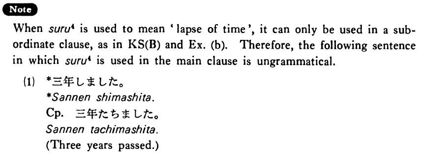

する (4) (B. 436)
- (ksa).
- この時計は十万円する・します。
- This watch costs 100,000 yen.
- (ksb).
- 後一年したら大学を出る・出ます。
- In another year I'll graduate from college.
- (a).
- A:それはどのぐらいしましたか。 B:二十五万円ぐらいしました。
- A: About how much did it cost? B: It cost about 250,000 yen.
- (b).
- もう少しすれば主人が帰ってまいります。
- In a short time my husband will be here.
